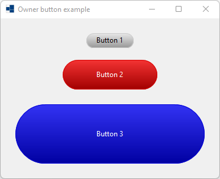
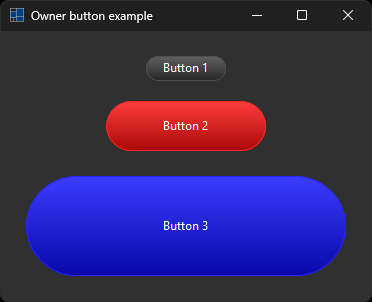
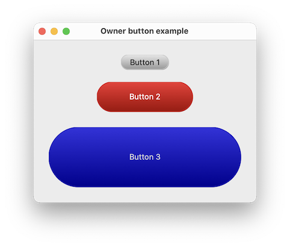
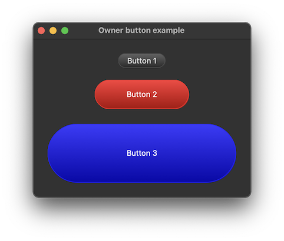
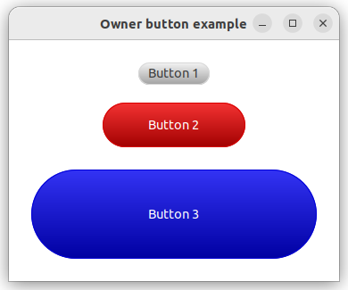

|
xtd
0.2.0
|
Loading...
Searching...
No Matches
owner_button.cpp
demonstrates how to create a custom button with xtd::forms::button control.
- Windows
- 

- macOS
- 

- Gnome
- 

#include <xtd/drawing/drawing_2d/linear_gradient_brush>
#include <xtd/forms/application>
#include <xtd/forms/button>
#include <xtd/forms/control_paint>
#include <xtd/forms/form>
using namespace xtd;
using namespace xtd::drawing;
using namespace xtd::forms;
namespace owner_button_example {
protected:
return application::dark_mode_enabled() ? control_paint::light(c, percent) : control_paint::dark(c, percent);
};
auto background_color = get_back_color().value_or(application::style_sheet().system_colors().control());
auto foreground_color = get_fore_color().value_or(application::style_sheet().system_colors().control_text());
auto button_color = accentuate_color(background_color, .05F);
auto border_color = accentuate_color(background_color, .15F);
auto text_color = foreground_color;
if (state() == visual_styles::push_button_state::hot || state() == visual_styles::push_button_state::default_state) {
border_color = accentuate_color(border_color, .15F);
button_color = accentuate_color(background_color, .15F);
text_color = accentuate_color(foreground_color, .15F);
} else if (state() == visual_styles::push_button_state::pressed || state() == visual_styles::push_button_state::checked) {
border_color = accentuate_color(border_color, .30F);
button_color = accentuate_color(background_color, .30F);
text_color = accentuate_color(foreground_color, .30F);
} else if (state() == visual_styles::push_button_state::disabled) {
border_color = button_color = color::from_argb(85, 85, 55);
text_color = application::style_sheet().system_colors().gray_text();
}
e.graphics().fill_rounded_rectangle(drawing_2d::linear_gradient_brush(e.clip_rectangle(), control_paint::light(button_color, .2), control_paint::dark(button_color), drawing_2d::linear_gradient_mode::vertical), e.clip_rectangle().x(), e.clip_rectangle().y(), e.clip_rectangle().width(), e.clip_rectangle().height(), e.clip_rectangle().height() / 2);
e.graphics().draw_rounded_rectangle(pen(border_color, 1), e.clip_rectangle().x(), e.clip_rectangle().y(), e.clip_rectangle().width() - 1, e.clip_rectangle().height() - 1, e.clip_rectangle().height() / 2);
e.graphics().draw_string(text(), font(), solid_brush(text_color), rectangle(e.clip_rectangle().x() + 5, e.clip_rectangle().y() + 3, e.clip_rectangle().width() - 10, e.clip_rectangle().height() - 7), string_format().alignment(string_alignment::center).line_alignment(string_alignment::center));
}
};
public:
form1() {
owner_button1.location({145, 25});
owner_button1.size({80, 25});
owner_button1.text("Button 1");
owner_button2.location({105, 70});
owner_button2.size({160, 50});
owner_button2.back_color(color::red);
owner_button2.fore_color(color::white);
owner_button2.text("Button 2");
owner_button3.location({25, 145});
owner_button3.size({320, 100});
owner_button3.back_color(color::blue);
owner_button3.fore_color(color::white);
owner_button3.text("Button 3");
text("Owner button example");
client_size({370, 270});
controls().push_back_range({owner_button1, owner_button2, owner_button3});
}
private:
owner_button owner_button1;
owner_button owner_button2;
owner_button owner_button3;
};
}
auto main()->int {
application::run(owner_button_example::form1 {});
}
Represent background color output manipulator class.
Definition background_color.h:22
Encapsulates a xtd::drawing::brush with a linear gradient. This class cannot be inherited.
Definition linear_gradient_brush.h:32
Defines a particular format for text, including font face, size, and style attributes....
Definition font.h:45
Defines an object used to draw lines and curves. This class cannot be inherited.
Definition pen.h:35
Stores a set of four integers that represent the location and size of a rectangle.
Definition rectangle.h:45
Defines a xtd::drawing::brush of a single color. Brushes are used to fill graphics shapes,...
Definition solid_brush.h:30
Encapsulates text layout information (such as alignment, orientation and tab stops) display manipulat...
Definition string_format.h:30
Each property of the xtd::drawing::system_colors class is a xtd::drawing::color structure that is the...
Definition system_colors.h:25
Represent foreground color output manipulator class.
Definition foreground_color.h:20
Defines the base class for controls, which are components with visual representation.
Definition control.h:79
virtual drawing::point location() const noexcept
Gets the coordinates of the upper-left corner of the control relative to the upper-left corner of its...
Represents a window or dialog box that makes up an application's user interface.
Definition form.h:52
Provides data for the xtd::forms::control::paint event.
Definition paint_event_args.h:29
The xtd::drawing namespace provides access to GDI+ basic graphics functionality. More advanced functi...
Definition actions_system_images.h:11
The xtd::forms namespace contains classes for creating Windows-based applications that take full adva...
Definition about_box.h:13
The xtd namespace contains all fundamental classes to access Hardware, Os, System,...
Definition system_report.h:17
Generated on Mon Sep 11 2023 20:53:06 for xtd by Gammasoft. All rights reserved.